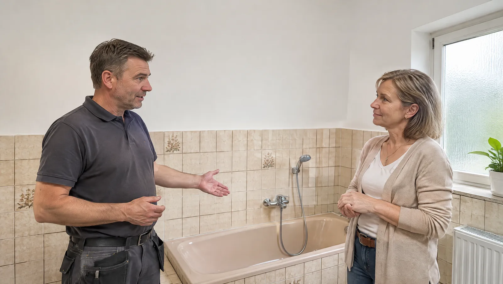

Meta Ads im Handwerk:
Aufträge statt Preisanfragen.

Du fährst raus, misst auf, schreibst abends das Angebot und hörst nie wieder etwas. Der Interessent hat über ein Portal vier Betriebe angefragt und den billigsten genommen. Meta Ads im Handwerk drehen das um: Die Anfrage kommt von einem Eigentümer aus deiner Region, sie geht nur an dich, und sie betrifft genau die Leistung, mit der du Geld verdienst.
Lohnen sich Meta Ads für Handwerksbetriebe?
Ja, für planbare Projekte mit hohem Auftragswert: Badsanierung, Heizungstausch, Dach, Fenster, Photovoltaik oder Innenausbau. Solche Vorhaben schieben Eigentümer oft monatelang vor sich her. Eine Anzeige mit einem fertigen Projekt aus ihrer Region ist der Anstoß anzufragen.
Nicht geeignet ist Meta für den Notdienst. Wer einen Rohrbruch hat, sucht bei Google und ruft den ersten Betrieb an.
Warum bekommst du Preisanfragen statt Aufträge?
Bei Portalen liegt es am Modell: Dieselbe Anfrage geht an mehrere Betriebe, also entscheidet der Preis. Bei eigenen Anzeigen entscheidet die Anzeige, wer sich meldet:
| So wirbst du | Wer sich meldet | Besser |
|---|---|---|
| „Alles rund ums Haus“ | Kleinaufträge und unklare Anliegen | Eine Leistung pro Kampagne |
| „Jetzt unverbindliches Angebot anfordern“ | Viele, die nur eine Vergleichszahl wollen | Beratung vor Ort anbieten, das Angebot folgt danach |
| Ganzes Bundesland als Zielgebiet | Anfragen mit zu langer Anfahrt | Umkreis um deinen Standort festlegen |
| Formular nur mit Name und Telefon | Mieter und Neugierige | Vier Fragen vor den Kontaktdaten |
Natürlich will jeder Eigentümer am Ende ein Angebot. Der Unterschied liegt im ersten Schritt: Wer zuerst einen Termin vor Ort vereinbart, hat sich schon für ein Gespräch mit dir entschieden.
So sieht eine Kampagne aus, die Aufträge bringt
Eine Leistung pro Kampagne: Nimm die Arbeit, an der du am meisten verdienst und für die du Kapazität hast. Bäder und Heizungen sprechen verschiedene Eigentümer an und bekommen deshalb getrennte Anzeigen.
Einzugsgebiet eng ziehen: Leg den Umkreis so fest, dass sich jede Anfahrt lohnt, und nenn die Region in der Anzeige beim Namen.
Eigene Baustellen zeigen: Handyfotos von fertigen Projekten, am besten als Vorher und Nachher, wirken in unseren Projekten glaubwürdiger als gekaufte Bilder. Dazu passt ein Satz eines zufriedenen Kunden, siehe Social Proof in Anzeigen.
Sicherheit versprechen, nicht den Preis: Eigentümer fürchten Dreck, Verzug und Nachträge. Ein Ansprechpartner, ein fester Zeitplan und ein verbindlicher Preis nach dem Aufmaß sind dein stärkstes Argument.
Welche Fragen sortieren Preisvergleicher aus?
Fragen mit festen Antworten, die der Interessent in Sekunden antippt. Das Formular liegt auf einer kurzen eigenen Seite oder direkt in Facebook und Instagram, den Unterschied erklärt Lead Ads oder Landingpage. Diese vier Fragen reichen:
| Frage | Antwortmöglichkeiten |
|---|---|
| Was planen Sie? | Komplettsanierung / Teilsanierung / Reparatur |
| Gehört Ihnen die Immobilie? | Ja, ich bin Eigentümer / Nein, ich bin Mieter |
| Wann soll es losgehen? | In den nächsten 3 Monaten / in 3 bis 6 Monaten / nur informieren |
| Wo liegt das Objekt? | Postleitzahl |
Mieter, Reparaturen und Orte außerhalb deines Gebiets bekommen automatisch eine freundliche Absage. Du bekommst dadurch weniger Anfragen, dafür deutlich mehr, bei denen sich der Termin lohnt. Weitere Beispiele stehen unter Lead-Qualifizierung.
Von der Anfrage zum Auftrag
Du stehst tagsüber auf der Baustelle und kannst nicht jede Anfrage sofort anrufen. Der Interessent muss aber sofort wissen, dass seine Anfrage angekommen ist und wann du dich meldest. Dafür bekommt er direkt nach dem Absenden automatisch eine SMS oder WhatsApp-Nachricht, zum Beispiel: „Danke für Ihre Anfrage. Wir rufen Sie heute zwischen 16 und 18 Uhr an.“ Den Rückruf legst du in dieses feste Zeitfenster. Warum der erste Tag so viel ausmacht, liest du unter Speed to Lead.
Wer „nur informieren“ antippt, bekommt nach einigen Wochen automatisch eine Nachfrage. Du führst dafür keine Liste. Miss am Ende nicht die Kosten pro Anfrage, sondern die Kosten pro Auftrag, siehe Was kostet ein Lead?
Häufige Fragen
Wie viel Budget braucht ein Handwerksbetrieb für Meta Ads?
Für die Testphase so viel, dass 20 bis 30 Anfragen zusammenkommen, vorher kannst du keine Quote ablesen. Ein Rechenbeispiel mit angenommenen Werten, deine echten Zahlen zeigt erst der Test: Bei 60 Euro pro Anfrage sind das 1.200 bis 1.800 Euro. Führt jede vierte Anfrage zum Termin und jeder vierte Termin zum Auftrag, kostet dich ein Auftrag 960 Euro Werbebudget. Bei einer Badsanierung für 25.000 Euro sind das knapp vier Prozent vom Auftragswert.
Funktionieren Meta Ads auch für kleine Betriebe?
Ja, weil du die Menge steuerst. Mit engem Umkreis, einer einzigen Leistung und einem strengen Formular bestimmst du, wie viele Anfragen ankommen. Ist dein Auftragsbuch voll, pausierst du die Anzeigen.
Kann ich über Meta auch Fachkräfte finden?
Ja. Gesellen, die nicht aktiv suchen, lesen keine Stellenbörsen, sind aber abends auf Facebook und Instagram. Eine Anzeige mit deinem Team und eine Bewerbung in einer Minute ohne Lebenslauf erreichen sie dort. Wie das aussieht, steht unter Recruiting über Meta.
Bei Ochsocial bekommst du das fertig eingerichtet: Anzeigen, Formular mit Vorauswahl, automatische Nachrichten und Auswertung. Von dir brauchen wir Fotos fertiger Projekte und ein Zeitfenster für Rückrufe. Jede Anfrage geht nur an deinen Betrieb. Dahinter steht die Erfahrung aus über 450 Projekten quer durch viele Branchen, mehr als 1,5 Mio. Euro verwaltetem Werbebudget und über 43.000 generierten Anfragen. Was wir im Einzelnen übernehmen, steht unter Leistungen.
Von welchen Aufträgen willst du mehr?
Schick uns per WhatsApp dein Gewerk, deine Region und die Leistung, die deinen Betrieb auslasten soll. Das Team von Ochsocial meldet sich schnellstmöglich persönlich bei dir, kein Bot, und sagt dir kostenlos, ob und wie du dafür über Meta Anfragen von Eigentümern bekommst, die nur an dich gehen.